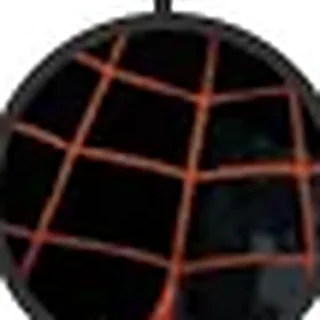

Encyclopédie › Marvel › Lieux et dimensions
Marvel Lieux et dimensions
Malkuth: Eighth Cosmos
En français : Malkuth : Huitième Cosmos
Multivers Marvel · 2015 – présent
À vérifier6 relations
Biographie
Malkuth: Eighth Cosmos, Multivers Marvel · 2015 – présent. Le monde manifesté : les Axes de Tout, la Rive Lointaine, l’Exo-Espace, le Superflow et tous les univers individuels.
Malkuth, le Royaume : la seule sphère que nous habitons.
Apparitions
Apparitions clés : Defenders: Beyond (2022).
Où le lire
Relations

Eighth Cosmos
Cosmos et firmaments · Malkuth · 2015 – aujourd’hui

Gevurah: Sphere of Judgment
Lieux et dimensions · la Cité Brisée

God Quarry
Lieux et dimensions · le cœur de l’existence

Marvels
Cosmos et firmaments
Multiverse
Lieux et dimensions · le Vortex Cosmique

Universe · Earth
Lieux et dimensions · le cœur de la carte